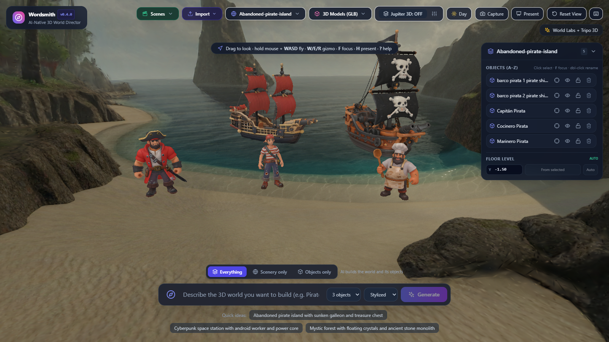
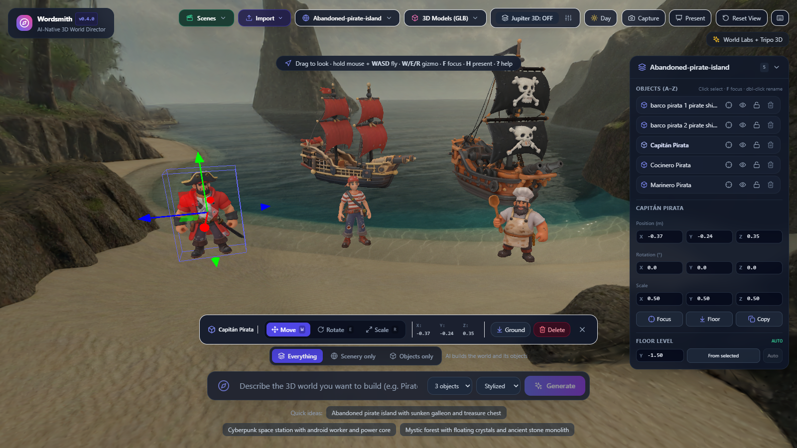
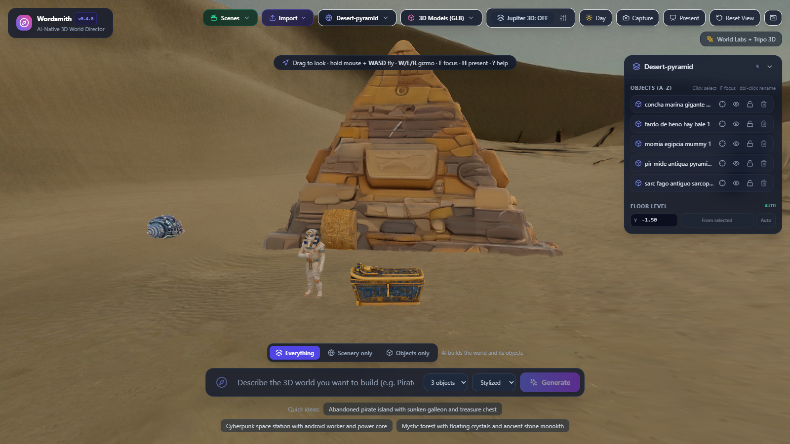
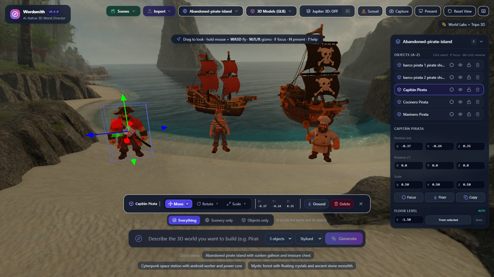
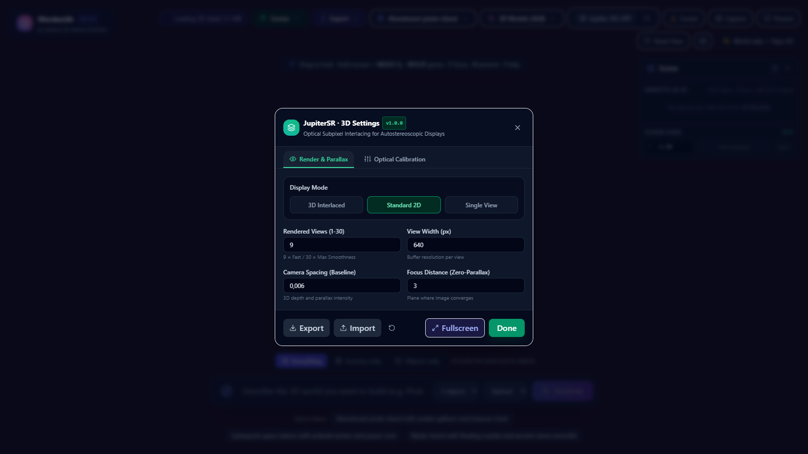

An AI-native 3D world director: one sentence becomes a composed, editable 3D world you can walk through in the browser.
David Bueno · TypeScript · React · Three.js · Fastify · Tripo 3D · World Labs · Jupiter SR

WorldSpec.“Abandoned pirate island with sunken galleon and treasure chest.”
→ the LLM plans scenery + up to 5 objects
→ World Labs generates the beach and cliffs
→ Tripo generates captain, cook, sailor, two ships
→ everything is composed and ready to fly through
Three modes in the prompt bar: Everything (world + objects), Scenery only (keeps your objects) and Objects only (adds Tripo models to the current scene, e.g. “5 different pirates with swords”). Live progress by Server-Sent Events.
Bounding boxes, real size, rotation and floor snapping using the World Labs collision mesh. New objects appear in a row in front of the camera, resting on the ground.
Outliner (select, focus, rename, hide, lock, delete), numeric inspector, gizmo W E R, undo / redo, duplicate, floor calibration. Shortcuts follow Unreal Engine.
Scenes are plain JSON files (world, models, transforms, camera, lighting). Imported maps and GLB models are stored by content hash; pins keep favourites on top.
H hides the UI and orbits the camera. PNG capture. Lighting presets: Day, Sunset, Night, Foggy.
Native Jupiter SR support: 1–30 interlaced views, optical calibration, profile import / export, fullscreen 1:1 subpixel alignment.

WorldSpec, GenerationJob and SceneFile are Zod contracts imported by both server and client. LLM output is validated before anything is generated.
Built with the SDD framework dbv-specs-ops: spec, plan, build, test, ship; decisions logged as ADRs.
103 tests (Vitest) across the three packages, prompt evals, and an end-to-end run in real Chrome driven over CDP.
LLM priority: OpenAI, then Anthropic, then Gemini, then a deterministic mock. Chosen at start-up from the keys that are present.
If Tripo or World Labs fails or credits run out, the provider falls back to models already stored locally.
Mock providers make the UI, the composition and the tests deterministic and free.
Every character, ship and building in the scene is a Tripo text-to-model result.
Each object gets a prompt optimised for Tripo (style, pose, material) plus a category: prop, character, architecture, nature or vehicle.
Object count is chosen by the user (1–5). Models are cached with unique per-job ids so a new job never overwrites a model used by a saved scene.
Every generated model stays in storage/models: 42 GLB models today, reusable from the 3D Models menu in any scene.


A scene is a small JSON file: world + models[] (position, rotation, scale, hidden, locked) + camera + lighting. Restoring it needs no AI call and no credits.

jupiter-interlace-sdk.Tripo meshes gain real depth: a pirate ship pops out of the screen without VR or glasses.
WorldViewer3D.ts is over 2,000 lines; the split is planned and documented.A strict WorldSpec contract stops a creative model from breaking the scene.
Saved scenes and cached Tripo models make the demo free and repeatable.
Real floor from the collision mesh, pivot-aware placement: objects look planted, not pasted.
Mocks for the LLM, World Labs and Tripo give deterministic tests and a no-credit demo.
Generation gets 80 %; Outliner, gizmo, undo and presentation mode close the rest.
A headless Chrome run caught bugs unit tests could not.
Questions? · github.com/davidbuenov/Wordsmith · Built with dbv-specs-ops
| Endpoint | Purpose |
|---|---|
POST /api/generate | Start a job from WorldPromptInput (prompt, mode, style, maxAssets) |
GET /api/jobs/:id · /events | Job state; Server-Sent Events with phase, progress and message |
GET /api/storage/worlds · /models | Stored maps and GLB models, alphabetical, pinned first |
POST /api/storage/upload | Persist an imported map or GLB (content-hashed, up to 500 MB) |
GET/POST/DELETE /api/storage/scenes | Save, list, load and delete scenes (SceneFileSchema) |
GET/PUT /api/storage/favorites/:kind | Pins for worlds and models |
Job phases: QUEUED · ANALYZING · GENERATING_WORLD · GENERATING_ASSETS · COMPOSING · COMPLETED · FAILED.